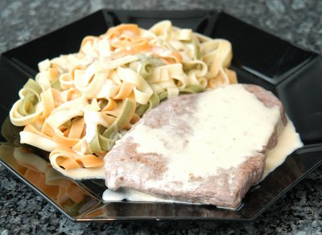

| Zutaten für 4 Personen: | |
| 8 - 12 | dünne Scheiben (à ca. 30 g) vom Kalbsfilet oder Kalbsschlüsselriemen |
| Salz | |
| Pfeffer | |
| Mehl | |
| 2 EL | Butter |
| 2 dl | Vollrahm |
Das Fleisch würzen und spurenweise mit Mehl bestäuben. Die Butter erhitzen, das Fleisch sekundenschnell anbraten und den Rahm darüber giessen. 1 - 2 Minuten stark kochen, dann sofort servieren.
Herbert Eigenmann, Code: RHS
Am 1.5.2007 durch RE zubereitet. Schmeckt lecker. Ist aber sehr einfach. Einfach aufpassen, dass man das nicht zu lange kocht. Ich habe es mit Nudeln serviert.
25.1.2010 Immer noch ganz gut und super schnell. Allerdings ist das mit einfach etwas Rahm etwas gar einfach. RE
@LINKBACK_TAG@ @WAKELOCK@